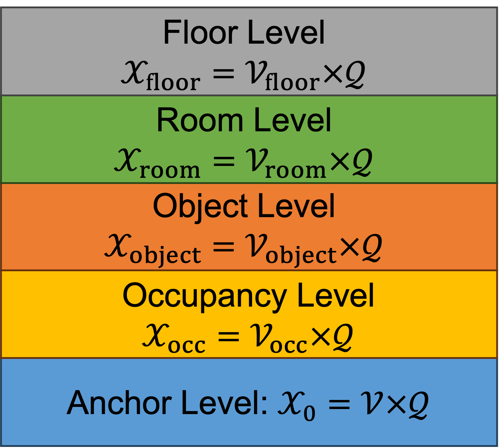
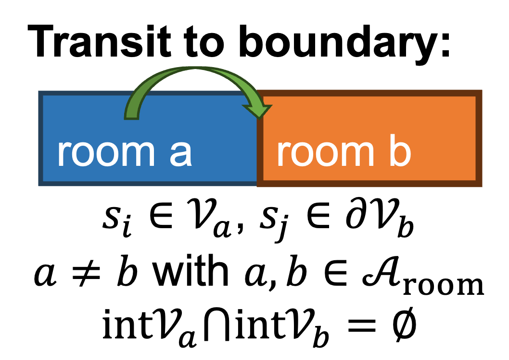
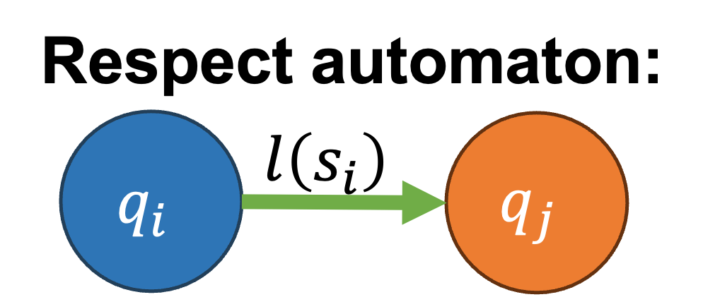
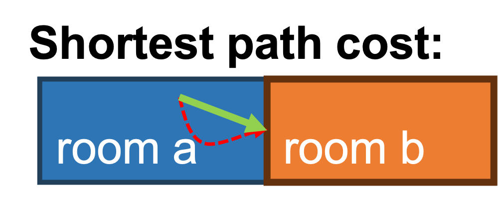
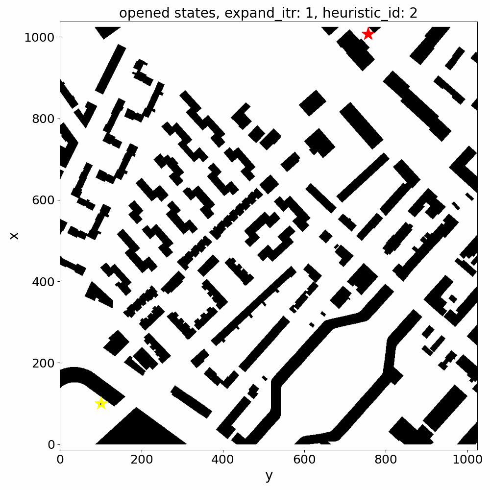

Hierarchical Planning Domain






We construct a hierarchical planning domain from the scene graph and the LTL automaton. Each level
in the hierarchical planning domain is a graph where nodes are the product of scene graph nodes and
automaton states. Edges in the hierarchical planning domain represent feasible transitions between
nodes, which should satisfy three conditions: 1) the edge is a transition from one node in the scene
graph to the boundary of another node; 2) the transition should respect the automaton state
transitions; 3) the transition should have the minimal cost among all possible transitions between
the two nodes in the scene graph. This hierarchical structure allows efficient planning by enabling
the planner to operate at multiple levels of abstraction.